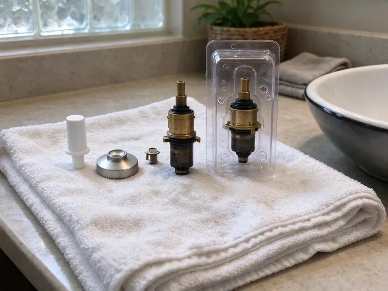

Shower Installation in Lander, WY
We rough in valves, set pans and connect drains so the new shower drains clean and stays dry in Lander, WY.
- Tub-to-Shower Conversions
- Inspections Handled
- Workmanship Guarantee
- Valves Pressure-Tested

Build the Shower You Want, Plumbed Right, in Lander, WY
Plan the shower plumbing with a licensed plumber before tile goes up.
Your Neighborhood Shower Installer in Lander, WY
JKV Plumbing installs showers to Wyoming plumbing code, from the drain up. We start with the drain location and slope, because a 2-inch shower drain set in the wrong spot or pitched wrong will cause trouble no matter how good the tile looks. The valve follows. After that we run the supplies and the shower arm.
Work we handle every week:
- Multi-Head, Body Spray and Rain Shower Layouts
- Supply and Drain Line Installation
- All Major Valve and Fixture Brands

Additional Bathroom Plumbing Services in Lander, WY
From toilets to showers, our bathroom plumbing team in Lander, WY repairs, installs, and replaces every fixture with clean, code-compliant work.


Customers
Why Choose JKV Plumbing for Shower Installation in Lander, WY?
We keep the work area tight during a remodel. We protect floors, keep debris contained and clean up daily, so the next trade starts fresh. It helps the whole crew.
- Quality Materials, We use brass valves and solid fittings that hold up in local water.
- Licensed Plumbers, Our plumbers are fully licensed and insured for every shower job.
- Clean Work, We protect finished floors and clean up each day during remodels.
Citywide Coverage
Every neighborhood in Lander is on our route, from older homes getting a remodel to new subdivisions under construction. We schedule rough-in and trim visits to fit your contractor's timeline, including early starts when the tile crew is waiting. Give us your schedule.
Experienced Team
Each plumber on our crew understands pressure, flow and drainage. That matters on multi-head showers, where pipe size and valve capacity decide whether the third outlet gets a strong spray or a weak dribble. Sizing gets checked first.
Safety-First Approach
Protecting your home during a remodel matters. Floors get covered, debris stays contained and the bathroom is swept at the end of each visit. We keep tools off your finishes.
Trusted Certified Lander Plumbing Services Professionals
At JKV Plumbing, we take pride in licensed, certified plumbing services throughout Lander, WY. Those papers on the wall mean something. Every repair, install and maintenance visit follows strict safety and quality rules, and the plumbers doing the work carry recognized industry credentials.
Call Us Now PHCC Plumbing Contractor Recognition
PHCC Plumbing Contractor Recognition Better Business Bureau (BBB) Accreditation
Better Business Bureau (BBB) Accreditation Angi Certified Pro
Angi Certified Pro ISO 9001 Quality Management Certification
ISO 9001 Quality Management CertificationShower Installation Work We Do in Lander, WY
Digital Shower Systems in Lander, WY
Digital shower systems like U by Moen and Kohler DTV need a little more planning. These valves usually sit in a nearby closet or vanity and need low-voltage wiring to the controller and an outlet close by. An electrician handles the outlet. We plumb the valve and outlets.

Shower Pan Installation in Lander
Shower pans fail quietly. Pinholes and loose drain clamps let water into the subfloor slowly, which is why tiled pans sit flooded for a full day before tile. We level prefab pans carefully. Both kinds get slope toward the drain.
Prefab Shower Unit Installation in Lander, WY
Prefab units are the fastest route to a new shower. We set the base on mortar, connect the drain, install the valve and trim and make sure the walls are fastened so nothing flexes when someone leans on them. Good for rentals and guest baths. Usually a one-day job.
Shower Upgrades Without a Full Remodel in Lander
Not every upgrade needs demolition. A new pan, a tub conversion or a new valve and trim can change the bathroom without a gut job. You see each option's price. They tend to wrap up within a week.
Walk-In Shower Installation in Lander
Walk-in showers depend on floor slope. Without a curb to hold water back, the floor has to pitch a quarter inch per foot toward the drain, and the waterproofing has to run well past the shower opening. We set that slope. We add blocking for grab bars while the studs are bare.
Budget Shower Upgrades in Lander, WY
Budget showers can still be built right. A one-piece unit with a good valve is a fraction of the cost of tile, and set properly on mortar it holds up for a long time. The valve is where to spend. You get the full price before we start.
New Construction Shower Installation in Lander, WY
New homes get their shower plumbing during framing. We rough in valves, supply lines and drains once the walls are framed, set each valve to the depth of the planned finish and locate the drain for the pan you picked. Then the rough-in inspection. Trim goes on once tile is done.

Gym and Locker Room Showers in Lander
Gym showers run back to back from open to close. We install heavy-duty commercial valves, push-button or metered controls when you want to limit run time, and drains sized for several showers at once. Accessible stalls get handhelds on slide bars. Work is phased so part of the room stays open.
Shower Installers Near Me in Lander, WY
Searching shower installation near me in Lander usually means a remodel is coming together. We can usually get a plumber out within a few days to look at the layout and give you a flat price for the shower plumbing. JKV Plumbing works all over town. We schedule around your contractor.
Plenty of plumbers near Lander can set a valve. Fewer measure the finished wall depth with your tile setter, flood-test the pan for a full day and schedule the inspection so it never holds up the job. Our plumbers do.
JKV Plumbing at a Glance
- Licensed and insured plumbers serving Lander, WY
- Same-day appointments and 24/7 emergency response
- Upfront, flat-rate pricing before work begins
- 4.9-star rated by 782+ Wyoming customers
Lander Map
Lander Information
- Population
- 7,615
- Area codes
- Local
- Service area
- Lander and towns within a 40 mile drive
- Nearby
- Riverton, Rock Springs, Green River, Rawlins
Hard, mineral-heavy water is common across Wyoming, and scale builds up fast in water heaters, faucets and appliances. Basements and crawlspaces are both common in Wyoming homes, and both benefit from protection from freezing and groundwater. That is why every valve gets a pressure test and every pan a flood test before tile goes on in Lander, WY.
Expert Services
Reach out to JKV Plumbing for honest, reliable plumbing from people who know the trade in Lander, WY.
Our Specialized Plumbing Services in Lander, WY
At JKV Plumbing, we handle the full list of plumbing services across Lander, WY. We go from leak detection all the way to full system installations, for homes and commercial buildings, and we do it quickly at a fair price. Explore our core services below:


From Rough-In to Trim in Lander, WY
Here is how a shower installation runs, start to finish.
Call or Use the Form
Start by calling JKV Plumbing at (307) 393-4049 or using our online form. We go over your plans and timeline.
Site Visit
Our plumber visits your home in Lander to measure and look at the existing pipes, then gives you a clear estimate.
Install and Test
We install the plumbing and test every joint, then return for trim once tile is done.
Frequently Asked Questions About Shower Installation in Lander
Standard shower installs in Lander usually run $1,500 to $6,000. Custom or luxury showers with multiple outlets often land between $5,000 and $15,000, mostly based on materials and plumbing changes. Moving the drain adds cost. You get a detailed quote after a visit.
Large rain heads and multiple outlets use more hot water. We check your water heater size and recovery rate and recommend an upgrade if needed.
Both stop scalding, but they work differently. A pressure-balancing valve adjusts the hot and cold ratio when pressure changes elsewhere in the house, while a thermostatic valve holds an exact temperature no matter what the pressure does. The thermostatic kind is pricier.
Yes, often. We do a lot of these. On slab homes, the drain usually has to move from the end of the old tub to the center of the new pan, which means cutting concrete.
Yes, with the slab recessed in the shower area. We plan the slope and drain placement carefully with your contractor.
We install Moen, Delta, Kohler, Grohe, Hansgrohe and Brizo valves. Every valve we install has scald protection.
Center drains and linear drains cover most showers. Center drains need four-way slope, and linear drains allow a single slope that works well with big tile. Tile size often decides.
One to two days for a standard stall. Tiled walk-ins and showers that need rerouted plumbing often take three to five days, or more with slab work. You get the schedule before we start.
What People Are Saying About Our Plumbing Experts?

Rachel N.
Hard water was leaving white crust on every faucet and our dishwasher was struggling. The tech tested the water, recommended a softener sized for a family of five, and installed it with a bypass valve in one afternoon. The spots on our glasses are gone.
Water Softener · Riverton, WY
Karen W.
After our third pinhole leak in copper, we stopped patching. JKV Plumbing gave us a written plan room by room and repiped the house in PEX while we stayed in it. The crew covered our floors every morning and cleaned up every night.
Repiping · Riverton, WY
Mark T.
The floor drain in our office break room backed up every few weeks. The plumber ran a cable, then put a camera down and found roots at a joint about thirty feet out. Seeing it on the screen made the decision easy.
Drain Cleaning · Jackson, WYBrian W.
I smelled gas behind the dryer and called right away. The plumber found a corroded flex connector, replaced it, and pressure tested the whole line before turning the gas back on. He let me watch the gauge hold steady for fifteen minutes.
Gas Line Repair · Jackson, WYLisa C.
Water was pouring out from under the washing machine on a holiday weekend. JKV Plumbing talked me through closing the valves over the phone and had a plumber at the house within ninety minutes. It was a burst fill hose.
Emergency Plumbing · Cody, WY
Marcus H.
Grease from the fryer line kept clogging the kitchen drain at my diner. JKV Plumbing hydro jetted the line after closing, showed me the buildup on camera, and set us up on a quarterly cleaning so it does not catch us on a Friday again.
Drain Cleaning · Lander, WY